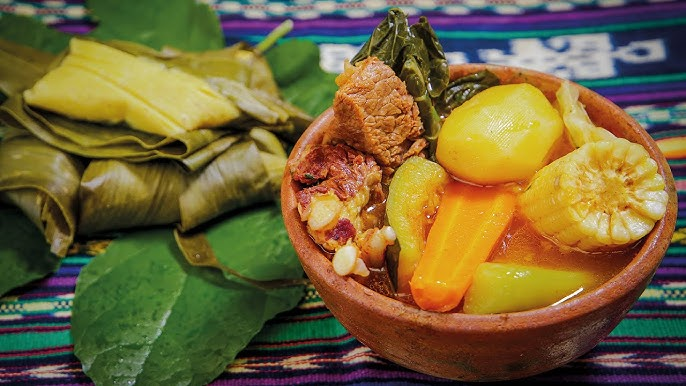
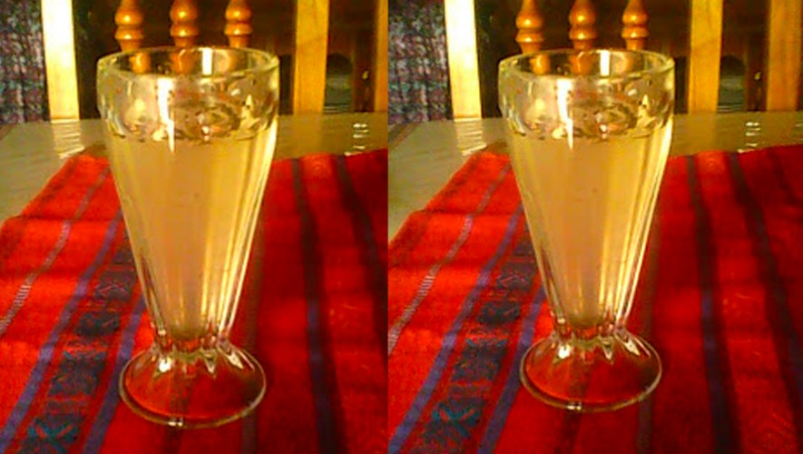

TOTONICAPAN
Costumbres cotidianas
La vida diaria en Totonicapan es un reflejo de su rica cultura. En cada esquina, ves a la gente vestida con trajes típicos. La época del año influye bastante en lo que llevan puesto. Por ejemplo, en la temporada de cosecha, las mujeres lucen blusas bordadas que parecen sacadas de un cuento. Y ni hablar de los hombres, que visten pantalones oscuros con chaquetas brillantes. Es un espectáculo, de verdad.
La vida diaria en Totonicapan es un reflejo de su rica cultura. En cada esquina, ves a la gente vestida con trajes típicos. La época del año influye bastante en lo que llevan puesto. Por ejemplo, en la temporada de cosecha, las mujeres lucen blusas bordadas que parecen sacadas de un cuento. Y ni hablar de los hombres, que visten pantalones oscuros con chaquetas brillantes. Es un espectáculo, de verdad.
Bailes
Baile de los monos
Baile de los venados
Baile de la conquista
Baile del torito
Baile de los enmascarados
Baile de los vaqueros
Baile de los xacaljotes
Baile de los pascarines
Baile de los moros y cristianos
festividades
La fiesta titular de Momostenango se celebra del 21 de julio al 4 de agosto.
Los días principales son el 25 y 31 de julio y 1 de agosto, cuando la iglesia Católica celebra la festividad del santo patrono, "Santiago Apóstol".
Totonicapán es uno de los departamentos más ricos en producción de artesanías.
costumbres y tradiciones
Su profunda mreligiosidad se observa en las manifestaciones espirituales propiamente dichas, sino en el liderazgo de los guías de la comunidad (sacerdotes mayas) que conocen el lenguaje del copal y las hierbas sacras, y ejercen una influencia significativa dentro de la comunidad.
Se celebra una fiesta en la cabecera departamental que es a la cabecera municipal, en honor al santo patrono San Miguel Arcángel en el mes de septiembre, siendo el 29 el día principal.
En el aspecto folclórico, en Totonicapán se presentan varios bailes típicos como: la conquista, el torito, el venado, los enmascarados, gracejos, los vaqueros, los xacaljotes, los pascarines, los moros y cristianos, y otros. Algo importante es la celebración del Wakxaquib Batz, del cual se hace especial mención en el municipio de Momostenango.
Estilos de vida
Totonicapán es otro de los departamentos profundamente ancestrales, en cuanto a su espiritualidad religiosa, aunque se haya sincretizado con el cristianismo manifestado en su territorio.
Dos de los mercados más grandes y por demás tradicionales del altiplano guatemalteco los constituyen el de San Francisco El Alto y el del mismo San Miguel Totonicapán. Ambos son un punto de unión de distintas direcciones en donde se puede conseguir lo necesario para cualquier trabajo del campo, industrias domésticas o labores rituales. Ambos también son muy ricos en artesanías de origen local.
Totonicapán es otro de los departamentos que presenta un rico espectro danzario de profundas raices coloniales y precoloniales. Dentro de las danzas están: Venados, Vaqueros, Mexicanos, Pascarines, Xecalcojes, Moros y Cristianos y La Conquista.
El departamento, por la trascendencia de su población mayense de origen k'iche', conservó toda la cosmología y la visión del mundo y de la vida del ancestral señorío prehispánico, de tal manera que la cultura del departamento, a pesar de ser resemantizada e hibridizada por los procesos históricos, resguarda con resistencia sus ancestrales valores culturales. No por casualidad se explica que esta región sea la más rica en artes, artesanías, bailes y mercados tradicionales de toda Guatemala. Por ende, también es de los departamentos de mayor riqueza en cuanto a literaturas orales.
Comidas tipicas
Existen tres platillos de su grastronomia maya de totonicapan
TOBIK
El plato totonicapense, por excelencia. Se refiere a un caldo preparado con carne de res y verduras acompañado por los tamales (rollos de maiz previamente cocido y tratado). Años atrás era costumbre consumirlo en festividades a través de escudillas de barro. El caldo era bebido de la misma escudilla (no se usaban servidoras para ello).

JOX Y REFRESCO DE CHIAN
Ambas bebidas tienen como base la flor de chian.
El JOX es una bebida propia de Totonicapán. Es una bebida caliente, aunque existe la versión en refresco (Refresco de Chian).

PAN DE YEMAS Y MIEL EN DULCE.
Propicio para la época de Semana Mayor. Cada familia tenía por costumbre comprar sus ingredientes y acudir a panaderías artesanales para la preparación de su pan. El dulce es preparado en casa por las amas del hogar, quienes utilizan diversos ingredientes, principalmente frutas de la temporada, garbanzos entre otros.
Es tradición en Totonicapán repartir el pan de yemas y miel en dulce entre familiares y amigos el día jueves santo y/o viernes santo.
.jpg)
Extencion territorial
El municipio de Totonicapán, es uno de los ocho municipios del departamento del mismo nombre, su extensión territorial es de 328 kilómetros cuadrados, que constituyen el 30.9 por ciento del total del departamento.
Idiomas
Los idiomas principales que se hablan en el departamento de Totonicapán, Guatemala, son el quiché y el español. También se hablan el kakchiquel, el mam y otros.
Idioma quiché
El quiché es el idioma indígena predominante en el departamento de Totonicapán.
Pertenece a la familia maya y a la rama k'iche'.
Otros idiomas
El kakchiquel también se habla en Totonicapán.
El mam es otro idioma que se habla en la región.
El español es otro idioma que se habla en Totonicapán.
Ubicación de Totonicapán
Totonicapán es un municipio ubicado en el occidente de Guatemala.
Está integrado por comunidades K'iche'.
El departamento de Totonicapán cuenta con 48 cantones.